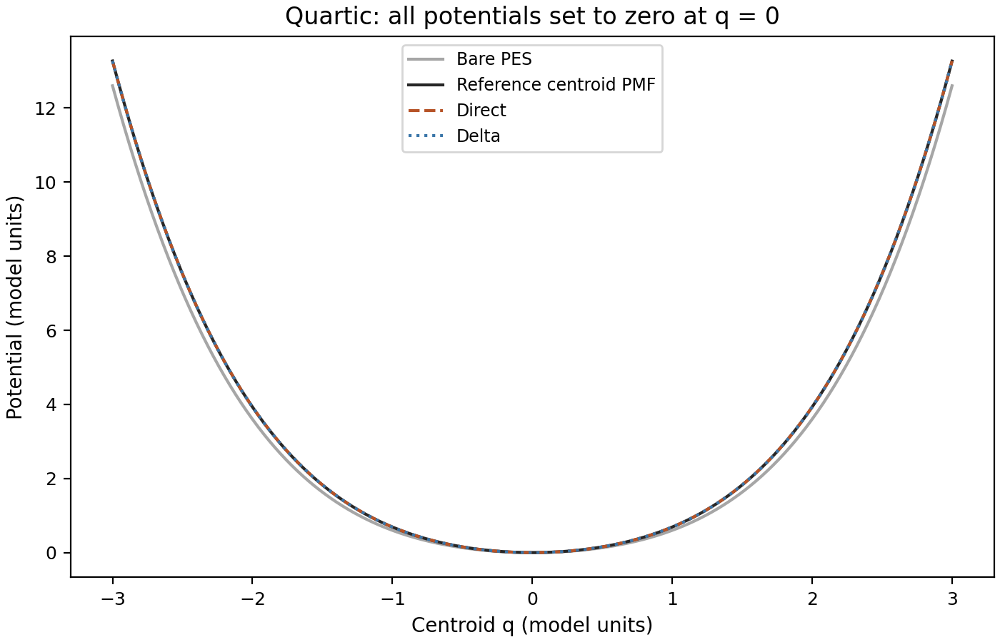
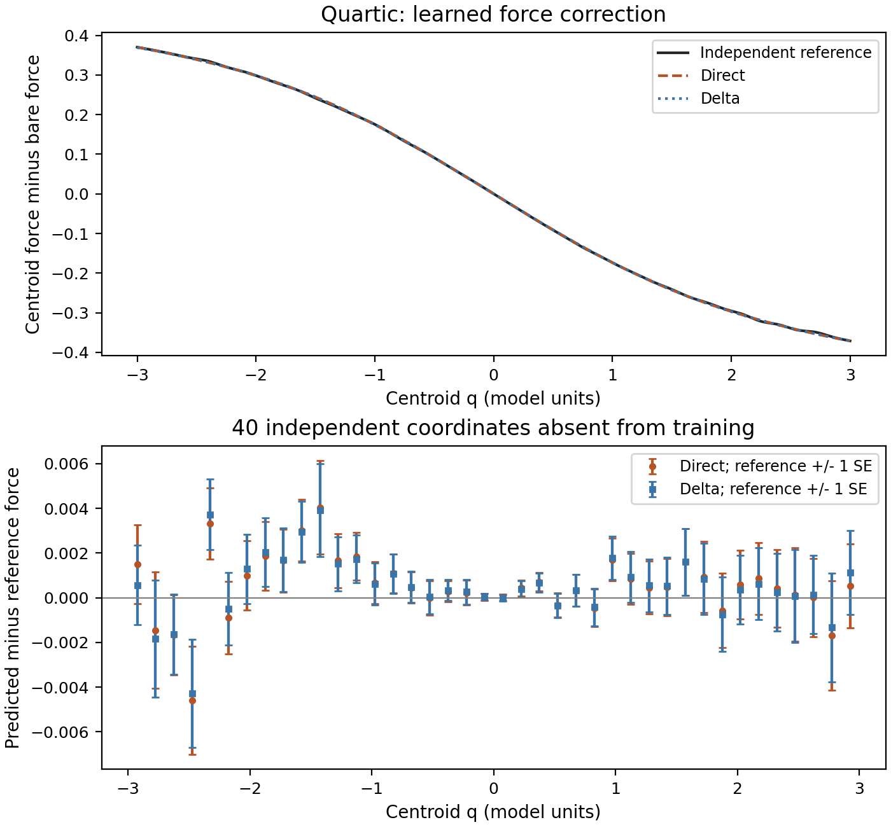
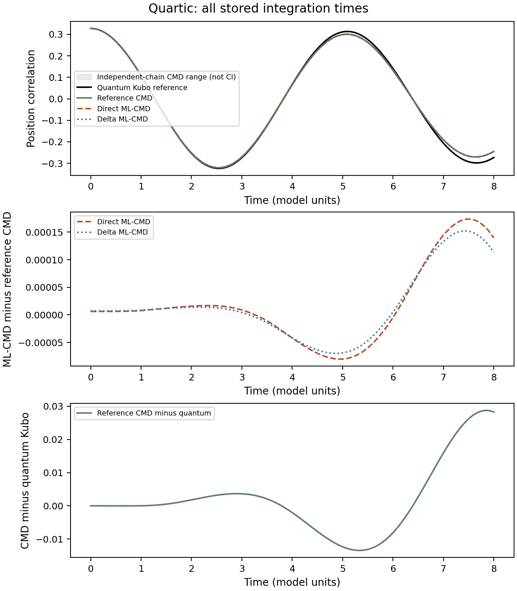

Model Calculation
CMD III: Learning Centroid Forces
Centroid molecular dynamics (CMD) propagates a path centroid on a free-energy surface. Evaluating the force on that surface requires averaging over the internal imaginary-time modes, which can be more expensive than the subsequent centroid propagation. Machine-learned CMD (ML-CMD) moves this work into data generation and replaces the mean-force calculation with a learned conservative potential. This note derives the force that should be learned, compares direct and delta learning in a one-dimensional quartic well, and explains how the training data can be obtained for molecular systems.
Part I introduced the constrained mean force and its integration into a potential of mean force (PMF). Part II showed that a well-defined centroid PMF can still produce an inaccurate spectrum. Here the question is narrower: can a network reproduce reference CMD, and what would that agreement say about quantum dynamics? The numerical results below are for a controlled single well. The molecular workflows are literature-based construction schemes, not molecular calculations performed in this benchmark.
There is a useful apparent contradiction to resolve first. A centroid free energy is not the average of the bead potential energies. Why, then, can its force be obtained by averaging bead forces?
Why the bead-force estimator gives a mean force
Consider a scalar physical potential energy surface (PES) \(V(q)\), constant mass \(m\), inverse temperature \(\beta=1/(k_BT)\), and \(P\) imaginary-time beads. We use Cartesian centroids and Boltzmann nuclear statistics. The ring-polymer construction is reviewed in PIMD I; only the centroid constraint needs a new derivation here. Write each bead position as
The centroid \(Q\) translates the whole path, while \(u_b\) describes its internal shape. With \(u_{P+1}=u_1\), the dimensionless action is
Define the constrained measure \(\mathcal D u=\prod_bdu_b\,\delta(P^{-1}\sum_bu_b)\). Its normalization can be absorbed into a \(Q\)-independent constant \(C_P\). The constrained configurational partition function and PMF are
Changing \(Q\) does not change the integration domain or the spring action. Differentiating the logarithm therefore gives the essential intermediate step:
The brackets denote the normalized distribution of internal paths at the specified centroid. Thus
There are two averages: the bead average within one path, and the conditional ensemble average over internal paths. A single path gives \(\widetilde F\), not generally \(F_c^{(P)}\). The identity is exact for this finite-\(P\) distribution; the continuous quantum path integral still requires bead-number convergence. It does not assert that classical propagation on \(A_c\) is exact quantum dynamics.
To see why this does not identify the PMF with an average potential, define \(\overline V=P^{-1}\sum_bV(Q+u_b)\). Differentiating its conditional average also differentiates the statistical weights:
The covariance term is why differentiating an averaged potential is a different operation from differentiating the logarithm of a partition function. Entropy and internal-mode fluctuations are already present in the conditional weights used for the mean force. No entropy contribution has been discarded in the boxed identity. Nonlinear collective variables require a separate treatment of their geometric measure; the simple result above concerns linear Cartesian centroids.
Two ways to construct molecular datasets
For many atoms, the input is the complete centroid configuration \(\mathbf R=(\mathbf R_1,\ldots,\mathbf R_N)\), rather than one scalar \(Q\). A dense grid in this \(3N\)-dimensional space is impractical. Two established ML-CMD approaches address the conditional average differently.
Ordinary PIMD trajectories and noisy force matching
In the approach of Loose, Sahrmann, and Voth, an equilibrium path-integral molecular dynamics (PIMD) trajectory supplies configurations and forces. For atom \(i\) in frame \(s\), construct
Here \(\mathbf f_{ib}\) is the physical PES force evaluated on the full configuration of bead \(b\). Spring forces are sampling forces and are not the physical labels. Periodic coordinates must be unwrapped consistently before constructing a centroid. Each frame contributes one centroid configuration and the corresponding forces on all atoms.
A frame does not provide a converged conditional mean. It provides a noisy force whose conditional expectation is the required mean force. In the scalar notation, squared-error regression obeys
The last term is independent of the model. With adequate sampling and representation, minimizing this loss estimates the conditional mean without requiring repeated visits to exactly the same high-dimensional centroid configuration. Finite data and restricted local descriptors still introduce learning error. Nearby trajectory frames are correlated, so validation should use separated trajectory blocks or independent runs.
Loose and coauthors demonstrated the method on liquid para-hydrogen and water using Silvera–Goldman and qSPC/fw potentials, respectively. Their datasets used 32 beads, 250 ps of normal-mode PIMD, and 8000 frames from the final 200 ps, followed by projection to centroid coordinates and forces and force-based DeepMD training. These are molecular condensed-phase benchmarks with specified force fields, rather than demonstrations that an arbitrary ab initio system is already solved. [1]
Explicitly averaged labels from fixed centroids
The approach of Wu, Li, and Yu first averages the internal modes at selected centroid configurations. Their water study extracted 2000 eight-molecule clusters from bulk PIMD, fixed the centroid positions, and used 1 ns of constrained PIMD per cluster to obtain average forces. The force correction relative to the original force field was then learned. Small-cluster training could be applied to bulk and surface water because the locality of that correction was tested for the systems studied; it is not a universal property of every material. [2]
The following is a concrete way to implement the required conditional sampling. It explains the constraint mathematically; it is not a reconstruction of the authors' unpublished integration updates. Their paper reports a modified OpenMM implementation of fixed-centroid PIMD.
- Select and hold a full centroid configuration. Set \(\mathbf r_{ib}=\mathbf R_i^*+\mathbf u_{ib}\), with \(\sum_b\mathbf u_{ib}=0\) for each atom. Every atom's centroid is held, not only each molecule's center of mass. The beads remain mobile.
- Lock the zero normal mode. In an orthonormal ring-polymer transform, \(\mathbf q_{i,0}=\sqrt P\,\mathbf R_i^*\). Keep this coordinate fixed and its fictitious momentum zero. Propagate and thermostat the other \(P-1\) modes jointly. Interactions couple the internal modes of different atoms; they cannot generally be sampled as independent atomic rings.
- Sample the correct conditional weight. The thermostat, force scaling, and fictitious-mass convention must correspond to the same ring-polymer Boltzmann distribution. Removing the zero mode does not remove the physical interactions among the beads.
- Measure the unprojected physical forces. At each retained sample, evaluate the original PES forces, average them over beads, and accumulate their time series. Constraint-projected forces have their zero-mode component removed and cannot be used as the mean-force labels.
- Check the average before accepting a label. Discard equilibration, account for autocorrelation, compare independent chains, and check bead number and integration step. A fixed simulation duration does not itself guarantee force precision. Finally subtract the original PES force at \(\mathbf R^*\) if a delta label is wanted.
A convention that makes the sampling temperature explicit is to use the configurational energy
Thermostatting the internal modes of \(W_P\) at temperature \(T\) samples \(e^{-\beta W_P}\). The equivalent convention uses \(U_P=PW_P\) at inverse temperature \(\beta/P\). Mixing the force and temperature conventions changes the distribution. In either convention, evaluate the unscaled physical force on each bead and then form \(P^{-1}\sum_b\mathbf f_{ib}\). The \(1/P\) in this bead average remains; do not apply an additional \(1/P\) scaling from differentiating \(W_P\).
Path-integral Monte Carlo (PIMC) can sample the same constrained weight without fictitious dynamics. The one-dimensional calculation below uses normal-mode proposals that leave the centroid fixed and a Metropolis–Hastings correction for the complete action and proposal density. Rejected proposals retain the current state in the average.
For a future ab initio application, a validated machine-learned PES could serve as the force provider for PIMD, followed by a second model for the centroid PMF. This is a proposed route: errors in the underlying PES, centroid-force learning, and CMD propagation would need separate validation. Neither the original PES energies nor their bead average should be relabelled as centroid free-energy targets.
Direct and delta learning
Once the labels are available, two conservative models can represent the same mean force. Direct learning represents the entire centroid PMF. Delta learning retains the known physical PES and represents only its free-energy correction:
The production forces are negative derivatives of these scalar energies. Direct learning fits \(F_c\); delta learning fits \(\Delta F_c=F_c-F_V\), where \(F_V=-V'\). Both are force-matching problems, so the energies are determined only up to an irrelevant constant. A delta model does not need to relearn the known PES, which can be advantageous when the remaining correction is simpler.
Subtraction alone does not improve the sampling precision of the force labels. At a fixed centroid the original force \(F_V(Q)\) is deterministic, so
Thus a smaller correction is not automatically a less noisy target in relative terms, and delta learning does not remove bead-number error. Faster optimization, fewer labels, and cheaper PIMC sampling are different claims that require different comparisons.
Learning the quartic centroid surface
A harmonic control separates implementation error from a nontrivial learned correction. For \(V(q)=q^2/2\), the bead average force is \(-Q\) for every constrained path, and the delta force is zero. The anharmonic test is
Coordinates, energies, and times use harmonic-oscillator reduced units with reference frequency one. This is a single well with a stiffening quartic term. It differs from the pure \(q^4/4\) model in the earlier Matsubara benchmark.
The mean-force identity also identifies what the correction measures. Define \(\sigma_u^2(Q)=\langle P^{-1}\sum_bu_b^2\rangle_Q\) and \(\mu_{3,u}(Q)=\langle P^{-1}\sum_bu_b^3\rangle_Q\). Expanding the cubic term in the force and using \(\sum_bu_b=0\) gives
The correction depends on the internal path width and its third moment. The third moment need not vanish away from the center; no Gaussian approximation is used here. The learned PMF and the original PES can consequently have different curvatures even though they describe the same underlying potential.


The training set contains 51 centroid positions: a spacing of 0.15 within \([-3,3]\), together with specified tail points out to \(\pm8\). At each position, four independent constrained PIMC chains produce the mean-force label. Training chains use 2048 proposals, discard the first quarter, and retain repeated states after rejection. Reference and validation tables use independent random streams and longer chains. Production uses \(P=64\), checked against \(P=128\).
Both networks have one hidden layer with 12 tanh units and 36 trainable parameters. They use the same labels, initialization, coordinate scaling, loss weights proportional to \((1+Q^2)^{-2}\), total-force normalization, and a budget of 2000 objective evaluations. These chosen loss weights emphasize the center and reduce the influence of large tail forces; they are neither thermal probabilities nor inverse-variance weights. Independent validation uses 91 positions, including 40 new midpoints in \([-2.925,2.925]\). Overlap with training coordinates does not imply reuse of their sampled labels.


The maximum unseen-position force discrepancies are \(0.00460\) for direct learning and \(0.00430\) for delta learning. Both pass the specified force tolerance. The support interval \([-8,8]\) does not imply a continuous error guarantee throughout it: independent unseen-position tests cover the central midpoint interval, and tail checks are at specified discrete positions.
This experiment does not establish faster delta convergence. Both quartic fits use all 2000 objective evaluations without reaching the optimizer's stopping criterion, and their final weighted training force errors are both about \(9.9\times10^{-4}\). The harmonic delta model terminates immediately because its zero-output initialization already represents the exact zero correction. Comparing the time or label count needed to reach the same independent predictive error would be a separate learning-curve experiment.
Four methods and two different errors
Accurate force matching should first reproduce reference CMD. Only then can a quantum comparison reveal the remaining dynamical approximation. The measured observable is the equilibrium Kubo-transformed position autocorrelation, with partition-function normalization and its physical amplitude retained rather than dividing by \(C(0)\). Here \(\hat H=\hat p^2/(2m)+V(\hat q)\), \(Z=\operatorname{Tr}e^{-\beta\hat H}\), and \(\hat q(t)=e^{i\hat Ht/\hbar}\hat q e^{-i\hat Ht/\hbar}\):
The four curves are a numerical quantum reference from particle-in-a-box discrete variable representation (DVR) diagonalization, reference CMD on the independent force-table PMF, direct ML-CMD, and delta ML-CMD. Each CMD branch uses its own canonical phase-space weight
They share temperature, physical mass, and the Maxwell momentum specification, but their position weights are not artificially forced to agree. Initial integration uses Gauss–Legendre position and Gauss–Hermite momentum quadrature. Propagation uses velocity Verlet with \(\Delta t=0.01\) through \(t=8\); all 801 time points are retained.


| Maximum absolute correlation difference, \(0\le t\le8\) | Harmonic control | Quartic well |
|---|---|---|
| Direct ML-CMD minus reference CMD | \(8.99\times10^{-8}\) | \(1.74\times10^{-4}\) |
| Delta ML-CMD minus reference CMD | \(2.22\times10^{-16}\) | \(1.52\times10^{-4}\) |
| Reference CMD minus quantum Kubo | \(1.80\times10^{-5}\) | \(2.87\times10^{-2}\) |
The correlation differences have reduced length-squared units. The harmonic quantum calculation agrees with \(\cos(t)/\beta\) to about \(8.3\times10^{-10}\); its small CMD discrepancy is numerical. In the quartic well, both networks faithfully replace the reference CMD surface, while the larger quantum discrepancy remains. Learning the correct mean force therefore does not make CMD exact quantum dynamics.
The direct and delta differences are smaller than the roughly \(0.0011\) maximum spread among CMD curves constructed from individual independent reference chains. That spread is a diagnostic, not a simultaneous confidence interval. The modest difference between the two learned errors is not evidence of a statistically resolved or universal delta advantage.
Numerical controls address different sources of error. The \(P=64\) versus \(128\) reference-force difference is at most \(0.00515\), below the specified \(0.01\) force tolerance. Halving the propagation step changes the quartic CMD correlation by about \(1.26\times10^{-5}\). Bead count, centroid-table density, initial-position interval, and position/momentum quadrature were also refined. The quantum reference uses 96 interior grid points on \([-6,6]\), with a 128-point fixed-box control and a larger-box control at fixed actual spacing \(L/(N+1)\). These are finite empirical refinements, not rigorous infinite-resolution error bounds. Independent PIMC comparisons include sampling noise.
Code, data, and reproducibility
The public attachment contains the training, reference, and independent validation force tables; saved conservative networks; and complete harmonic and quartic correlation time series. Its replay command verifies the files, loads the saved models, checks energy–force consistency, recomputes the reported differences, and generates the article plots. It requires Python, NumPy, SciPy, and Matplotlib, and does not import a private ToyModel checkout.
python assets/code/mlcmd-quartic/reproduce.py --output mlcmd-replay- Attachment README describes the data, dependencies, commands, and reproduction limits.
- reproduce.py replays the saved benchmark and plots. Its optional refitting mode is separate from the default replay.
- mlcmd_learning.py implements the direct and delta scalar energy networks and force matching.
- Quartic training labels, independent reference labels, and independent validation labels retain force standard errors and validation membership.
- Quartic correlation data and harmonic control data retain all production time points.
- Physical configuration and fit metadata and attachment checksums describe the frozen public dataset.
This attachment reproduces the saved models, force validation, and figure-level comparisons. It does not independently regenerate the original constrained PIMC chains, DVR reference, or centroid trajectories. The one-dimensional dataset is a conditional-mean adaptation of ML-CMD, not a reproduction of the molecular papers' full training and simulation protocols.
The supported result is limited to these two wells at one temperature, mass, quartic coefficient, and network initialization. Temperature or isotope transfer, double wells, tunneling regimes, data-efficiency rankings, and total-cost acceleration have not been established. A molecular dataset must additionally validate its underlying PES, state-point coverage, local-environment range, and any cluster-to-bulk transfer.
References and related notes
- T. D. Loose, P. G. Sahrmann, and G. A. Voth, “Centroid Molecular Dynamics Can Be Greatly Accelerated through Neural Network Learned Centroid Forces Derived from Path Integral Molecular Dynamics,” Journal of Chemical Theory and Computation 18, 5856–5863 (2022). Journal article; author manuscript.
- C. Wu, R. Li, and K. Yu, “Learning the Quantum Centroid Force Correction in Molecular Systems: A Localized Approach,” Frontiers in Molecular Biosciences 9, 851311 (2022). Open-access article.
The mean-force and regression derivations in this note are provided explicitly to distinguish exact equilibrium identities from numerical and dynamical approximations. For the underlying ring-polymer construction and propagation, see PIMD I and normal-mode propagation. For the distinction between a free-energy landscape and dynamics, see Reaction Computation IV.